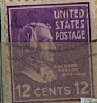
| SOURCE | TITLE| IMAGE MATCH | click to source page |
| eBay | 1938 12c Zachary Taylor, 12th President Scott 817 Mint F/VF NH | eBay | 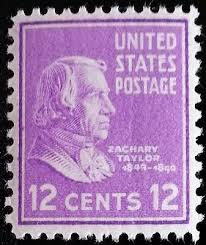 |
| HipStamp | United States #817 12¢ Zachary Taylor. (1938). Used. | United States, General Issue Stamp / HipStamp | 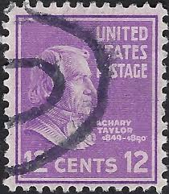 |
| eBay | 1938 Zachary Taylor 12 cent stamp Scott 817 (D) | eBay | 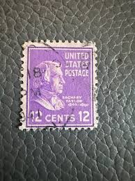 |
| eBay | Scott# ? US Stamp 1938 12c Zachary Taylor Prexie Used - #G470 | eBay | 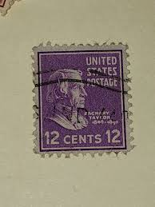 |
| eBay | Thomas Jefferson 3 Cent Stamp | eBay | 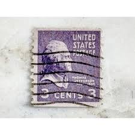 |
| eBay | Violet PSE Unused US Stamps (1901-1940) for sale | eBay | 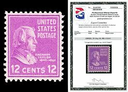 |
| bellmotosbh.com.br | Stamp | 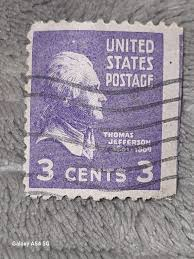 |
| Fandom | Zachary Taylor (1784-1850)/biography | Familypedia | Fandom | 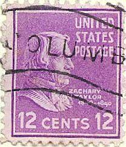 |
| Etsy | SCARCE U S 1873 10c Portrait of THOMAS JEFFERSON Classic Postage Stamp Very Fine Used Desirable and Sought After SCT151 - Etsy | 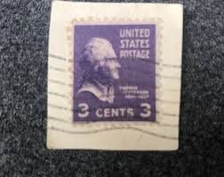 |
| Alamy | Zachary taylor stamp Stock Photo - Alamy | 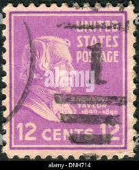 |
| Mercari | 1 Cent USPS | Mercari | 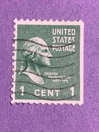 |
| HipStamp | ICOLLECTZONE / HipStamp | 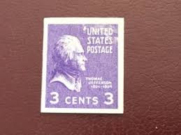 |
| eBay | 4 Cent Red Used US Stamps (1901-Now) for sale | eBay | 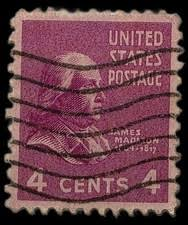 |
| VeVe Collectibles | USPS — Stamp Art — Presidential Series (1938) Series 2 - VeVe Digital Collectibles | 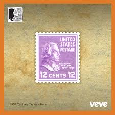 |
| This 3-cent violet stamp is a classic piece of American postal history, featuring Thomas Jefferson, the 3rd U.S. President. Issued in 1938, it belongs to the iconic Presidential Series, often referred to | 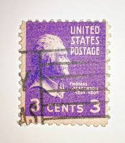 | |
| eBay | 3 Cent PSE Historical Figures United States Stamps for sale | eBay | 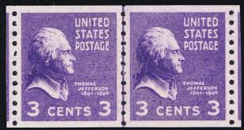 |
| iStock | Zachary Taylor Stamp Stock Photo - Download Image Now - Black Background, Color Image, Cut Out - iStock | 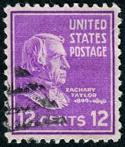 |
| Shutterstock | United States Circa 1937 Stamp Printed Stock Photo 61589725 | Shutterstock | 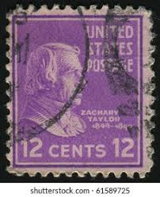 |
| eBay | U.S. Postage ~ Zachary Taylor ~ Used/Posted ~ 12¢ Purple Stamp ~ c.1938 ~ M05 | eBay | 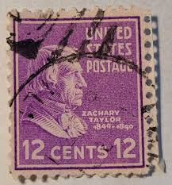 |
| eBay | EFO 807 "PURPLE RAIN" HEAVILY OVERINKED! -- JEFFERSON IS IN A "PURPLE RAIN" | eBay | 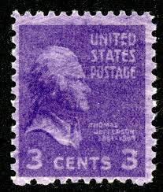 |
| WikiTree | US Postage Stamps - United States Presidents | 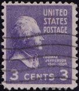 |
| eBay | 1938 Zachary Taylor 12 cent stamp Scott 817 (A) | eBay | 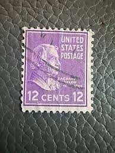 |
| stampphenom.com | United States of America 1938 - 1939 Definitives - Presidential Series – StampPhenom | 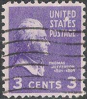 |
| Found some neat old stamps! I'm wondering if they're worth getting formally appraised? : r/askStampCollectors | 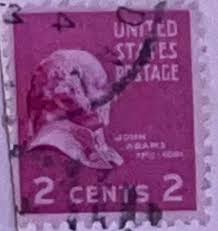 | |
| WordPress.com | Zachary Taylor – A Stamp A Day | 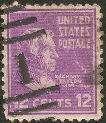 |
| Bardo Stamps | Classic U.S. Stamps: Scott 851, 3c Thomas Jefferson (Coil) | 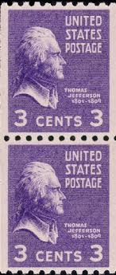 |
| eBay | F/VF (Fine/Very Fine) Purple Unused US Stamps (1901-1940) for sale | eBay | 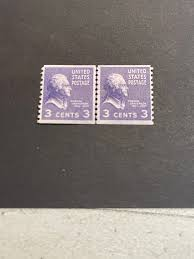 |
| myk.design | Presidential Series: Zachary Taylor U.S. Postage Stamps | Face Value 1 – MykDesignShop | 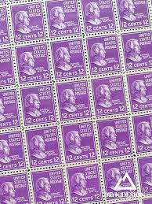 |
| Found some of my Great Grandmother's old letters, most of them are from the 1950s, was wondering if these stamps are worth anything? : r/askStampCollectors | 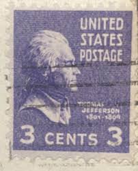 | |
| U.S. territories and their postal history | 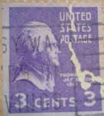 | |
| eBay | Scott# 817 US Stamp 1938-43 12c Zachary Taylor Used (a2) | eBay | 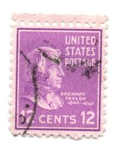 |
| eBay | Scott# ? US Stamp 1938 12c Zachary Taylor Prexie Used - #G468 | eBay | 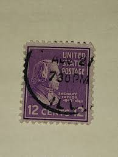 |
| eBay | 1938 Presidential Series U.S. Postage Stamp 12 Cent Zachary Taylor Scott #817 | eBay | 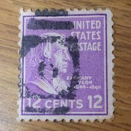 |
| eBay | 3 Cent US Back of Book Stamp Booklets for sale | eBay | 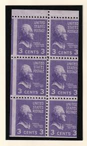 |
| HB Philatelics | Scott #842 - $35.00 : Zen Cart!, The Art of E-commerce | 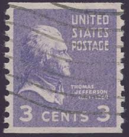 |
| eBay | USA167)1937 3c violet Thomas Jefferson Book type ow803 | eBay | 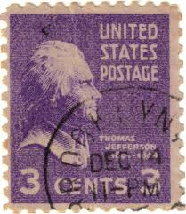 |
| iStock | Thomas Edison Stamp Stock Photo - Download Image Now - Thomas Edison, Portrait, Postage Stamp - iStock | 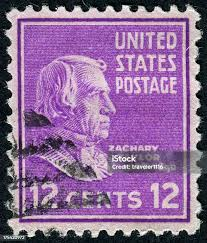 |
| eBay | Rare Collectable 3 Cent Thomas Jefferson Purple Stamp | eBay | 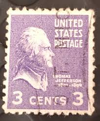 |
| HipStamp | 842 3 cent Thomas Jefferson coil Stamp used F | United States, General Issue Stamp / HipStamp | 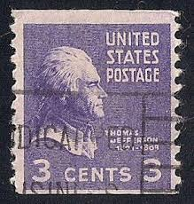 |
| eBay | VINTAGE ~ United States Postage Stamp ~ THOMAS JEFFERSON (Purple 3 cent) - 015 | eBay | 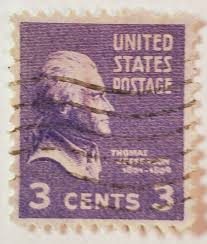 |
| eBay | Scott# ? US Stamp 1938 12c Zachary Taylor Prexie Used - #G471 | eBay | 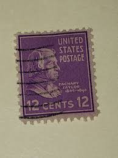 |
| eBay | USA Postage Zachary Taylor 12 Cents Stamp - #S42202NQ | eBay | 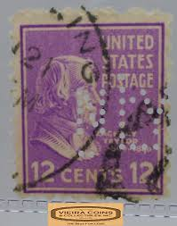 |
| iStock | Zachary Taylor Stamp 193843 Stock Photo - Download Image Now - 19th Century Style, Antique, Close-up - iStock | 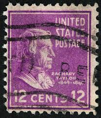 |
| eBay | Vintage Rare 1932 Violet Thomas Jefferson 3 Cent US Postage Stamp (11) | eBay | 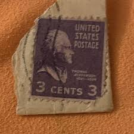 |
| abrostamps.com | US Scot 807a Misperforated Booklet Pane Mint NH – ABRO Stamps & Coins | 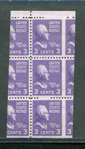 |
| PicClick | THOMAS JEFFERSON 3 cent united states postage stamp 1938 #807 $2.00 - PicClick | 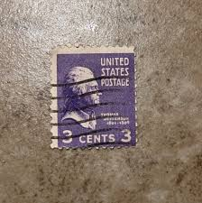 |
| eBay | United States, Scott 817, Zachary Taylor, 1938, MH | eBay | 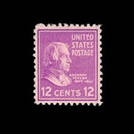 |
| eBay | U.S. Postage ~ THOMAS JEFFERSON ~ 3¢ Purple Stamp ~ Posted - Y37 | eBay | 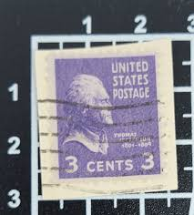 |
| eBay | 1937 (?) ***HOTEL ADAMS*** PHOENIX, ARIZONA ADVERTISING COVER+SCOTT# 787 STAMP! | eBay | 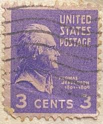 |
| Stamp Auction Network | H.R. Harmer, Inc. Sale - 3022 Page 24 | |
| eBay | Scott# ? US Stamp 1938 12c Zachary Taylor Used Prexie Used - #5796 | eBay | |
| eBay | thomas jefferson 1801-1809 3 cent stamp | eBay | |
| Steve Malack Stamps | 1286 10c Jackson, Misperfed OG NH, nice - Steve Malack | |
| eBay | Scott# 817 12c ZACHARY TAYLOR with Box cancel ~ (A-7) | eBay | |
| eBay | Rare Thomas Jefferson stamp 3 cents | eBay | |
| Shutterstock | Profile Picture Old Man: Over 742 Royalty-Free Licensable Stock Photos | Shutterstock | |
| eBay | thomas jefferson 1801-1809 3 cent stamp 3pcs. | eBay | |
| eBay | Rare 1932 Violet Thomas Jefferson 3 Cent US Postage Stamp | eBay | |
| eBay | USA - 1938 - Presidential Issue - Thomas Jefferson - 3C - #24 | eBay | |
| Shutterstock | Usa Postage Stamp Circa 1938 3c Stock Photo 1240179394 | Shutterstock |